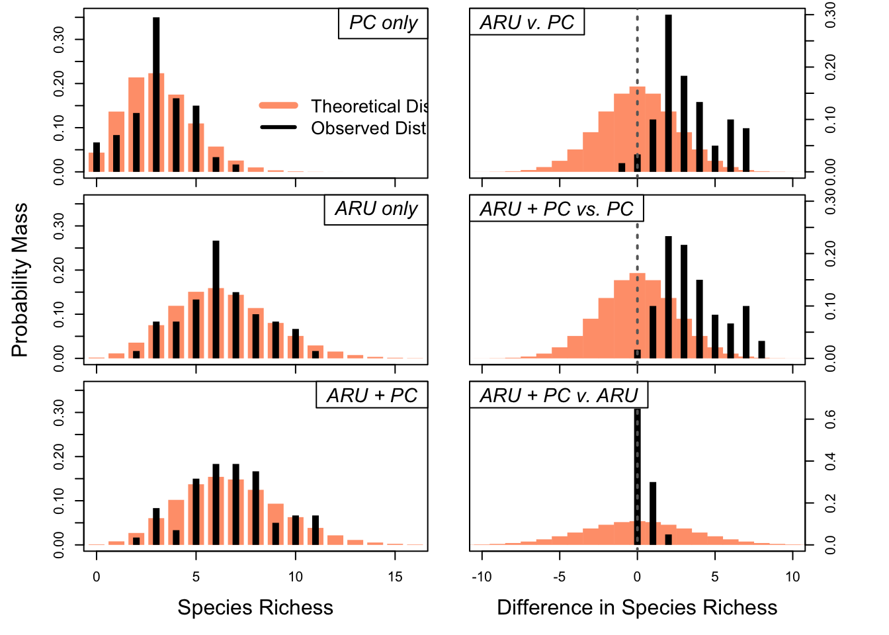

Point Route Year ARU PC ARU + PC
1 BIGM-02 BIGM 2022 8 4 8
2 BIGM-02 BIGM 2024 5 5 6
3 BIGM-03 BIGM 2022 6 5 7
4 BIGM-03 BIGM 2024 6 4 6
5 BIGM-11 BIGM 2022 4 4 5
6 BIGM-11 BIGM 2024 9 3 9Exploring New Ways to Determine the Value of Combining ARUs and PCs
Overview of the Problem
In our original manuscript submission, we used binomial tests to see if there were meaningful differences between the species richness of ARUs, point counts (PCs), and each method relative to the combined total of both methods. The data is structured like this:
Note that the ARU + PC column is not necessarily the value in ARU plus the value in PC. That is because ARU + PC represents all unique species found at that site across all methods, and ARUs and PCs often found the same species in the same location. In other words, the ARU + PC value in the first row of the dataset is 8 because all four species found by PC were also found by ARUs, and ARUs found four additional species. In the case where all three values are equal, both methods had an identical species list; when both ARU and PC are equal but ARU + PC is larger than both, it is because each method found one unique species.
Binomial tests were appropriate for the ARU vs. PC test because this statistical method works well when comparing two methods of Poisson-distributed data, but they were not appropriate for the combination. Binomial tests ignore all ties, and since the combined dataset by definition could not be smaller than either individual method, the tests were highly likely to find significant differences regardless of whether or not they actually differed.
In other words, the figure reproduced below from our initial submission includes two graphs that are ultimately misleading: the middle-right and bottom-right. We should also remove the bottom-left graph for reasons that will become apparent by the end of this document (as a spoiler, the best method I found doesn’t rely as heavily on that data directly and it is not valuable to show its theoretical vs. observed distributions).

What We Want to Do
The overarching goal of the original analysis was to determine whether using both ARUs and PCs was more valuable than using one method alone. We already know that ARUs found more species than PCs at almost every site, so it is not that interesting to ask the following question:
Are more species detected when deploying ARUs and PCs than when only PCs are performed?
We already know the answer. Not only is the answer yes, but ARUs alone outperformed PCs alone. However, we can easily recognize that ARUs often missed species that PCs found. A more direct question, then, is:
Do PCs meaningfully contribute to a dataset when ARUs are deployed?
An alternative way of stating this question: how much value would be added by deploying PCs when ARUs are also going to be capturing data?
New approaches
After Drew and I talked through this problem and the potential ways we could run an appropriate analysis, I used generative AI through UMich’s portal at Drew’s suggestion to see what sorts of analysis it recommended. The following suggestions came from GPT-5.6 Sol, but I only quote it directly when italicized. All non-italic text is my own writing, and I also read the theory and applications of each statistical method in verified human-written sources before proceeding.
I also obtained code from this AI search, but independently checked each component and rewrote all lines of code in the syntax, order, and commenting that made sense to me. The following options were what the AI proposed:
Paired nonparametric analysis
This approach works when sites are independent and there is one matched observation per site, but because it is nonparametic we lose some statistical power.I wrote this option down for posterity’s sake, but I think our data are clean enough that we don’t need to resort to non-parametric testing.
Count regression using a negative-binomial generalized linear mixed model
This method estimates the number of species added by using two methods instead of one. In our case, that would mean the number of species added if we run PCs in addition to using ARUs. Per ChatGPT:
Testing whether the model’s mean is greater than zero is awkward because zero is the boundary of the count distribution. It is often better to report
- estimated mean number of added species
- confidence interval
- proportion of sampling units for which at least one species was added
- distribution of the gain across sites
ChatGPT also mentioned that this model might struggle if many values are close to zero, and many of our values are. As a result, I went forward with the next option, which is similar but handles low values better.
Hurdle negative-binomial model
This appears to be the strongest option and it is the one I proceeded with. It is used specifically for count data that has a lot of zeroes, and I found several citations that used this approach for bird count data. A hurdle negative-binomial model asks two separate questions:
- What is the probability that the second method adds at least one species?
- Among surveys where it adds species, how many does it add?
Based on what we know, I believe these two questions are the most relevant to what we want to show in our paper given the statistical tools and study design at our disposal. Again, this framework is a slight shift from our original paper, where we asked if the combination of both datasets was higher significantly higher than either individual dataset. Here, we are specifically testing whether conducting PCs in addition to ARUs, not the other way around, is more valuable than only using ARUs. As stated before, the reasoning here is that we already know the answer in the other direction, but now we want a clear way to determine whether ARUs wholly replace PCs (from a data perspective).
Running the Hurdle negative-binomial model
After we format our data, we do actually have a lot of zeroes: the relevant data are the total number of species found by ARUs and total number of species missed by ARUS. That second number is synonymous with “total number of species found only by PC at a given site, and in our dataset, it’s 0 in 39 of 60 cases. Here’s the same table as above but with the additional column for the number of species ARUs missed at each site:
Point Route Year ARU PC ARU + PC OnlyFoundByPC
1 BIGM-02 BIGM 2022 8 4 8 0
2 BIGM-02 BIGM 2024 5 5 6 1
3 BIGM-03 BIGM 2022 6 5 7 1
4 BIGM-03 BIGM 2024 6 4 6 0
5 BIGM-11 BIGM 2022 4 4 5 1
6 BIGM-11 BIGM 2024 9 3 9 0UMich’s AI did not direct me to check assumptions before this test, so the rest of this information comes from my digging around. A hurdle negative-binomial model makes the following assumptions about the data:
- The response variable represents counts that have meaningful zeroes. A “0” in any given row means that PCs did not find any species that ARUs did not.
- All sampling units are comparable and all observations are conditionally independent. Different rows should not reflect repeated sampling at a given site.
- The dataset includes “enough” zero and positive observations. I couldn’t find any hard numbers for what enough means, but I know from testing out code in the following sections that the packages tell you when your data is insufficient. It also gives a warning for nonconvergence (see below).
- The model doesn’t assign an observed probability to zero, since only positive observations get included in the first part of the hurdle. There’s a specific line of code that ensures this step.
- Random effects are accounted for
- Other predictors are not collinear
- No observations have an outsized effect on the model.
- The model converges on a set of model parameters.
Many of these assumptions are solved at the experimental design stage, and the rest can be checked with the model outputs. I could not find any statistical assumption tests I needed to run before proceeding.
Question 1: Does PC detect additional species that ARU did not?
In order to do the first step, the model needs binary data. All data from OnlyFoundByPC gets converted to either a 1 (if any additional species were found) or a 0 (no additional species were found). The model then works with this binary data.
All code for this step is as follows:
# convert to binary
all_data_long <- all_data_long %>%
mutate(UniquePC_binary = as.integer(OnlyFoundByPC > 0))
# make sure "route" is a factor
all_data_long$Route <- as.factor(all_data_long$Route)
# build the model
Hurdle1 <- glmmTMB(UniquePC_binary ~ 1 + (1|Route),
family = binomial,
data = all_data_long)
# NOTE: "Route" is the same to us as "Wetland". This code accounts for each location as a random effect.
# view the output of the model
summary(Hurdle1) Family: binomial ( logit )
Formula: UniquePC_binary ~ 1 + (1 | Route)
Data: all_data_long
AIC BIC logLik -2*log(L) df.resid
81.7 85.9 -38.8 77.7 58
Random effects:
Conditional model:
Groups Name Variance Std.Dev.
Route (Intercept) 3.775e-09 6.144e-05
Number of obs: 60, groups: Route, 16
Conditional model:
Estimate Std. Error z value Pr(>|z|)
(Intercept) -0.6190 0.2707 -2.287 0.0222 *
---
Signif. codes: 0 '***' 0.001 '**' 0.01 '*' 0.05 '.' 0.1 ' ' 1**With a p-value of 0.0222, we can conclude that adding PC observations DOES detect additional species than if we only used ARU data.**
Question 2: Among surveys where PCs adds species, how many do they add?
Now that we know that PCs add additional species, we need to know how many they add. We can do that with the following code:
# build the model.
# Very similar to Hurdle1, but no longer with binary data.
# After some trial and error, these models work better when you subset the data ahead of time:
positive_data <- subset(all_data_long, OnlyFoundByPC > 0)
# The following code is the most robust model but it has a handful of problems:
# 1. There are not enough observations per route for it to be a useful random effect.
# 2. There is only one positive observation for many routes.
# 3. There is little variation in the positive_data dataset; all values are either 1 or 2.
# Hurdle2 <- glmmTMB(
# OnlyFoundByPC ~ 1 + (1|Route),
# family = truncated_nbinom2,
# data = positive_data
# )
# so the next step is to try a simpler model. A truncated Poisson has no separate negative-binomial dispersion parameter, so it is easier to estimate. I can do so without dropping the Route random effect, but will do so if I continue to get warning messages.
Hurdle2_pois <- glmmTMB(
OnlyFoundByPC ~ 1 + (1 | Route),
family = truncated_poisson,
data = positive_data
)After building the model, the following code should be run:
Hurdle2_pois$sdr$pdHess[1] TRUEBecause this code returns TRUE, we know (per ChatGPT): the Hessian matrix is positive definite, indicating that glmmTMB found a locally stable optimum and could calculate standard errors. Together with the absence of convergence warnings, this supports using the model estimates. It is a numerical convergence check, not a goodness-of-fit test.
It does not establish that: the truncated-Poisson distribution fits the data well; all model assumptions are met; PC provides an ecologically meaningful benefit.
As I understand it, as long as our code returns TRUE and we’ve been careful to choose the correct models, we have enough statistical power to proceed. A summary of the model renders:
summary(Hurdle2_pois) Family: truncated_poisson ( log )
Formula: OnlyFoundByPC ~ 1 + (1 | Route)
Data: positive_data
AIC BIC logLik -2*log(L) df.resid
21.8 23.9 -8.9 17.8 19
Random effects:
Conditional model:
Groups Name Variance Std.Dev.
Route (Intercept) 1.498e-09 3.871e-05
Number of obs: 21, groups: Route, 9
Conditional model:
Estimate Std. Error z value Pr(>|z|)
(Intercept) -1.2972 0.5652 -2.295 0.0217 *
---
Signif. codes: 0 '***' 0.001 '**' 0.01 '*' 0.05 '.' 0.1 ' ' 1The relevant piece of information in this summary output is the Estimate column, which gives us the log-scale estimate of the amount of species added by PC when ARUs don’t capture them all. We can get the raw number by converting out of log-scale:
beta0 <- fixef(Hurdle2_pois)$cond["(Intercept)"]
lambda <- exp(beta0)
mean_when_positive <- lambda / (1 - exp(-lambda))
lambda(Intercept)
0.2732825 mean_when_positive(Intercept)
1.142857 There we have it: when ARUs miss a species at a site, PCs provide an additional 1.14 species to the overall dataset.
Putting it all together
By running a hurdle negative-binomial model, we learned that:
- PCs do contribute additional species to the data provided by ARUs.
- When they contribute data, they contribute roughly 1.14 species that ARUs missed.
We can use this information to get an overall probability that a PC would add to an ARU dataset by multiplying the percent of rows in which PCs contributed novel data by the amount of species they contribute in those cases. That gives us:
\[ \frac{21 \text{ rows with PC-only species}}{60 \text{ total rows}} \times 1.14 = 0.399 \text{ expected added species per site overall} \]
APPENDIX: writing these methods and results out to be added to the manuscript
Methods
After comparing ARU and PC species richness, we used a two-stage hurdle modeling approach to determine if using both ARUs and PCs leads to higher species richness than a scenario where only the more successful method were deployed. All assumptions for both models were validated before analysis.The first hurdle was a negative-binomial model that tested whether or not the second model significantly contributes observations, and the second hurdle was a zero-truncated Poisson mixed model to determine the relative contribution of the second method when it detected additional species. We included site as a random effect in both models. We then multiplied the relative contribution by the percent of sites at which an additional species was detected to obtain a value for the expected contribution of the second method across all sites.
Results
PCs detected at least one species not detected by ARUs at 35% of site-years. Hurdle negative-binomial models revealed this value is significant (p = 0.022) and that an estimated 1.14 species are detected when PCs detect a novel species. Averaged across all observations, utilizing both ARUs and PCs generates an expected contribution of 0.4 species per site relative to utilizing only ARUs.